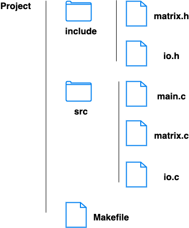

#include <stdio.h>
#include <stdlib.h>
#include <time.h>
#include "io.h"
#include "matrix.h"
int main()
{
srand(time(NULL));
// get matrix size
int size = getSize();
// create two random matrices
int *m = getMatrix(size);
int *m2 = getMatrix(size);
printf("---------Matrix 1--------\n");
displayMatrix(m, size);
printf("\n");
printf("---------Matrix 2--------\n");
displayMatrix(m2, size);
printf("\n");
// create transpose
int *t = transpose(m, size);
printf("----------Transpose of Matrix 1----------\n");
displayMatrix(t, size);
printf("\n");
free(t);
// scalar multiplication
int *sm = scalarMultiply(m, 10, size);
printf("----------Scalar Multiplication of Matrix 1----------\n");
displayMatrix(sm, size);
printf("\n");
free(sm);
// calculate the summation matrix
int *ms = matrixSum(m, m2, size);
printf("----------Matrix Summation----------\n");
displayMatrix(ms, size);
printf("\n");
free(ms);
// calculate the multiplicaiton matrix
int * mm = matrixMultiply(m, m2, size);
printf("----------Matrix Multiplication----------\n");
displayMatrix(mm, size);
printf("\n");
free(mm);
// free memory
free(m);
free(m2);
return 0;
}
